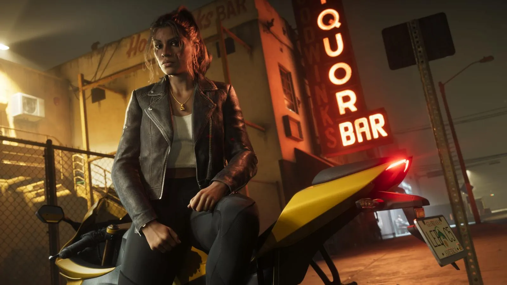

This is a Free Call From…: прохождение миссии GTA 6
Опубликовано:

Коротко
- Подруга Лусии по тюрьме Шайна выходит на свободу и просит подвезти её к парню. Встреча быстро превращается в разборку — и от ваших решений зависит, сколько вы унесёте.
- Необязательная миссия главы 4. Играем за: Лусия.
- Награда: до ~$6 500 товаром для скупщика.
Миссия коротко
| Глава | 4. Vice City, Baby |
| Тип | необязательная, пропускаемая |
| Играем за | Лусия |
| Кто даёт | Шайна |
| Где начинается | округ Vice-Dale, Хэмлет — тюрьма |
| Условие | после Lawyer Up: проехать Лусией через Хэмлет или рядом — Шайна напишет |
| Награда | до ~$6 500 товаром для скупщика |
Прохождение по шагам
- Заберите Шайну у тюрьмы в Хэмлете.
- Отвезите её к дому её парня Рафа в Southside.
- Войдите в дом за ней. Пока она выясняет отношения, обыщите кухонный стол и спальню справа.
- Когда Шайна наставит пистолет на Рафа, отговорите её или дайте выстрелить.
- Когда войдут бандиты, договоритесь, чтобы они ушли, или перестреляйте всех троих.
- Поделите сумку — Шайна отдаст вам половину.
- Быстро уезжайте, пока не приехала полиция.
Советы
- Добыча из дома — около $1 500, товар, брошенный бандитами, — около $1 200, половина Шайны — около $5 000.
- Перестрелка с бандитами даёт больше добычи.
- Всё это — товар: деньги вы получите у скупщика.
Когда пропадает
Пропускаемая. Доступна только ограниченное время в главе 4.
← Все необязательные миссии главы 4
Частые вопросы
Как начать This is a Free Call From…?
После Lawyer Up проедьте Лусией через Хэмлет — Шайна напишет и попросит забрать её у тюрьмы.
Можно ли пропустить миссию с Шайной?
Да: она доступна только ограниченное время в главе 4.
Источники: PowerPyx, «GTA 6 This is a Free Call From… (Pick up Shayna) Walkthrough», 18–19.11.2026. Кнопки указаны для PS5, в скобках — Xbox. Названия миссий — как в английской версии игры.